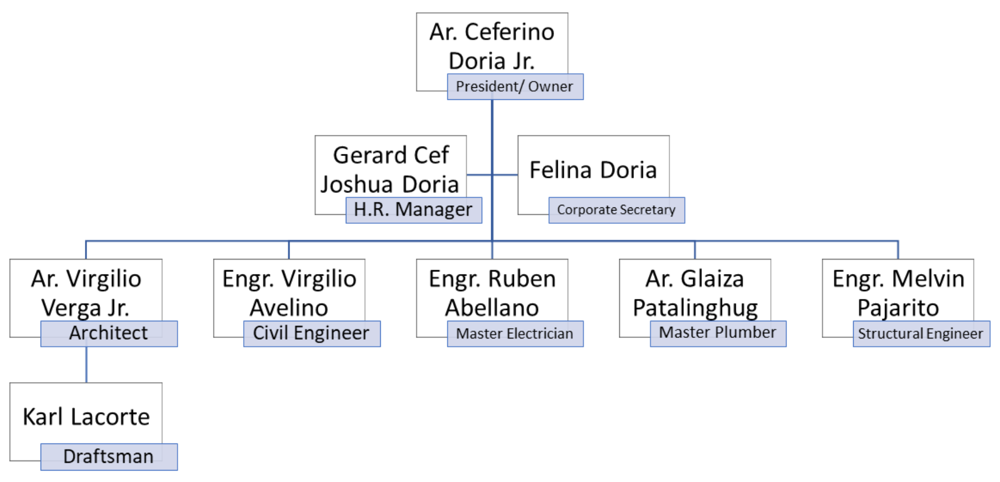

| About Us | Services |
|---|---|
|
D5 Design & Build is an architectural and construction company that specializes in creating
innovative and modern architectural designs and constructing them from foundation to completion.
|
CEFERINO B. DORIA JR., Architects offers a wide service, from designing from scratch to building
completion. The company is equipped with professional architects who give out the best and modern
architectural designs with the direct supervision of Architect Ceferino B. Doria Jr.
|
Our Team |
|
|  | |